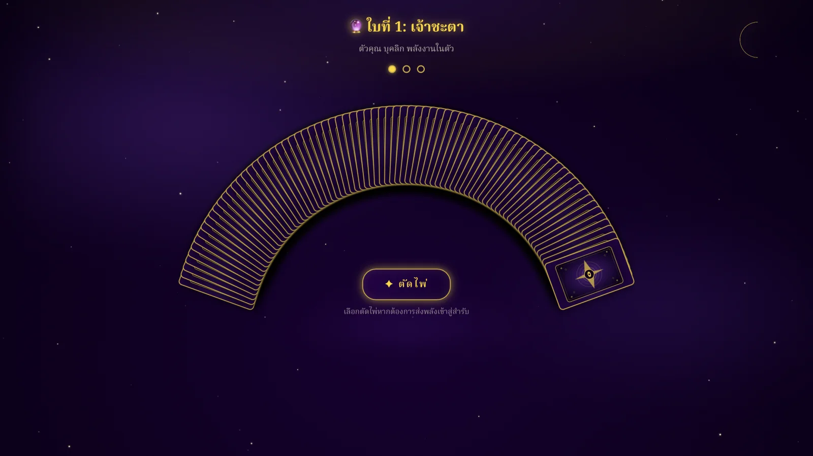

BloodScope
แอป iOS วิเคราะห์และจำแนกเม็ดเลือดขาว 13 ชนิดด้วย AI ประมวลผลบนอุปกรณ์ ผ่านเข้าสู่ NSC 2026 รอบชิงชนะเลิศระดับประเทศ
Read the case study ↗Data Science · AI/ML · Thammasat University
ผม ธนัช วิจิตราการลิขิต นักศึกษาคณะวิทยาศาสตร์และเทคโนโลยี สาขาวิชาเทคโนโลยีและนวัตกรรมดิจิทัล มหาวิทยาลัยธรรมศาสตร์ ศูนย์ลำปาง สนใจทำงานด้าน Data Science และการพัฒนา AI/ML โดยเน้นการวิเคราะห์ข้อมูล การสร้างโมเดล และการนำผลลัพธ์ไปใช้แก้ปัญหาจริง
เปิดรับโอกาสฝึกงานและโครงการด้าน Data / AI / Software
3 of 4 competition projects
เลือกแสดง 3 ผลงานเด่นจากทั้งหมด 4 โครงการ ส่วนรายการและรายละเอียดทั้งหมดอยู่ในหน้า Competitions
แอป iOS วิเคราะห์และจำแนกเม็ดเลือดขาว 13 ชนิดด้วย AI ประมวลผลบนอุปกรณ์ ผ่านเข้าสู่ NSC 2026 รอบชิงชนะเลิศระดับประเทศ
Read the case study ↗
แอปวิเคราะห์โรคในช่องปากเบื้องต้นแบบเรียลไทม์ เปรียบเทียบ 3 โมเดล และได้รับทุนสนับสนุน NSC รอบภูมิภาค
Read the case study ↗
แนวคิด AI Nutritionist ที่เชื่อมข้อมูลสุขภาพกับแผนอาหาร พร้อม EDA และ financial model สำหรับการนำเสนอธุรกิจ โดยไม่ได้พัฒนาเป็นซอฟต์แวร์
View project overview ↗Personal project highlight
ผลงานที่พัฒนานอกการแข่งขัน เพื่อทดลองเทคโนโลยีและสร้างประสบการณ์ที่ผู้ใช้เปิดใช้งานได้จริง

เว็บดูดวงไพ่ทาโรต์ภาษาไทยที่ใช้งานได้จริง มีไพ่ 78 ใบ ระบบไพ่กลับหัว และ Responsive Card Fan ที่สร้างด้วย HTML5 Canvas
View project & try the demo ↗What I bring
ผมชอบงานที่ต้องทำความเข้าใจปัญหาให้ชัดก่อนลงมือพัฒนา และมองผลลัพธ์ตั้งแต่ข้อมูล โมเดล ไปจนถึงประสบการณ์ของผู้ใช้